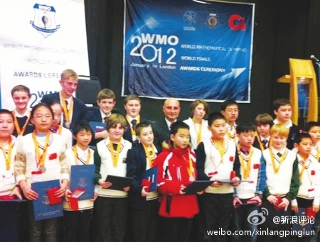

WMO和IMO什么关系？ //@lby1234:康神体面。。//@xiaxia: 康神高中就读这么体面的学校啊 //@kangxn: 我高中时候学校跟日本长崎高中联谊，我想了半天不知道送什么好，就弄了一套人民币的硬币，找了个不错的礼品盒和包装纸包得象模像样的送人家了。看上去很好，其实成本才几块钱，盒子比东西都值钱。@热浪直播间:【中青报：赢了奥赛，输了素质】2012世界奥林匹克数学竞赛中，中国选手获得全球16金中10金。其中发生一则小插曲：参赛的学生互换礼物时，外国小朋友送上了精心准备的水杯、笔，中国孩子没准备，只好回赠人民币。外国选手更看重人与人的交往，而中国选手似乎眼里只有分数而没有人。网页链接 